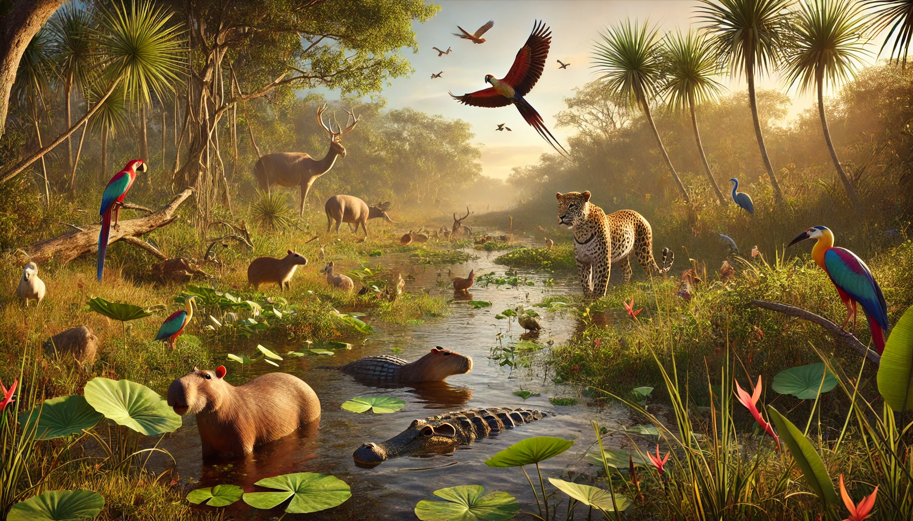

A maior floresta tropical do mundo abriga uma biodiversidade impressionante. Aqui estão 10 dos seus habitantes mais interessantes:
Prof. Rodrigo
Deserto
Habitat
Os desertos são regiões áridas com vegetação escassa. Apesar das condições inóspitas, a fauna é diversificada e fascinante.
Prof. Rodrigo
Floresta-Temperada
Habitat
As florestas temperadas possuem estações bem definidas e cobrem diversas regiões do hemisfério norte. Animais interessantes incluem:

Prof. Rodrigo
Pantanal
Habitat
Um dos maiores biomas alagados do mundo, localizado no Brasil, com biodiversidade única.
Prof. Rodrigo
Savana
Habitat
As savanas são ecossistemas tropicais caracterizados por uma estação seca e outra chuvosa, com vegetação predominantemente de gramíneas e poucas árvores. Estendem-se por regiões da África, América do Sul, Ásia e Austrália.
Prof. Rodrigo
Recife de Corais
Habitat
Os recifes de coral são ecossistemas marinhos de biodiversidade espetacular, localizados em águas tropicais.
Prof. Rodrigo
Tundra
Habitat
A tundra é um bioma frio com vegetação rasteira, localizado principalmente no Ártico e em altas altitudes. Apesar das condições extremas, ela abriga animais adaptados às baixas temperaturas.